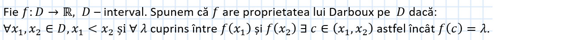

Proprietăți locale:
- De mărginire locală a unei funcții continue
- La semnul unei funcții continue într-un punct
Proprietăți pe intervale:
- Proprietatea lui Darboux
 OBSERVAȚII:- O funcție care are proprietatea lui Darboux, odată cu două valori pe care le ia funcția, ia toate valorile cuprinse între ele.
- Dacă o funcție are proprietatea lui Darboux, atunci aceasta nu poate avea discontinuități de speța întâi.
- Funcțiile cu proprietatea lui Darboux admit cel mult discontinuități de speța a doua.
- Dacă o funcție admite cel puțin un punct de discontinuitate de speța întâi, atunci aceasta nu are proprietatea lui Darboux.
- O funcție care are proprietatea lui Darboux transformă un interval tot într-un interval.
- Dacă imaginea unui subinterval al domeniului de definiție nu este tot un subinterval, atunci funcția nu are proprietatea lui Darboux.
- Teorema Cauchy-Bolzano
- Teorema despre monotonie și proprietatea lui Darboux
- Teorema de localizare a unei rădăcini
- Semnul unei funcții continue
Exemplul 1:
Exemplul 2: